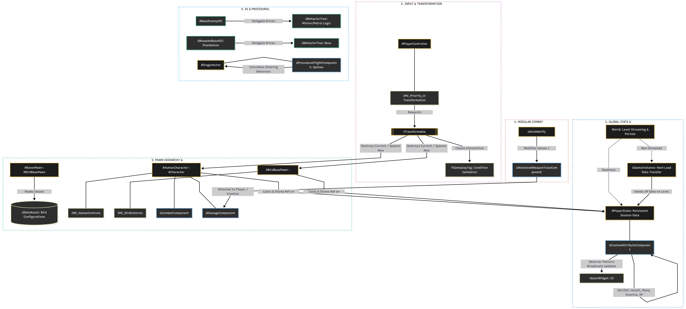

ROLE: Solo Production - Design & Development

High-level execution flow demonstrating decoupled state persistence, interface-driven transformations, and event-driven AI.
UCustomAttributeComponent bound to the APlayerState. Maintained strict data integrity across boundaries by leveraging UGameInstance caches for hard loads and persistent state injection during seamless transitions.ITransformable framework to decouple pawn logic. The pipeline evaluates Hierarchical FGameplayTag conditions, safely handles the garbage collection of the active shell, and dynamically injects Priority 0 Input Mapping Contexts (IMCs) upon target possession.UAdvancedWeaponTraceComponent attachable to any entity via composition. Hit calculation is strictly slaved to UAnimNotifyState events within Montages, guaranteeing frame-perfect synchronization between visual kinematics and server-side damage execution.UBehaviorTree execution for standard AI. Architected a bespoke, standalone AI Controller for the Boss entity to manage complex phase transitions and strictly mitigate "God Class" inheritance bloat.UProceduralFlightComponent to solve complex aerial traversal for entities like Dragons. Combined spline-based locomotion with dynamic steering behaviors (e.g., separation, alignment, cohesion) to generate fluid, procedural flight animations independently of the primary navigation mesh.ABirdBase architecture heavily reliant on UPrimaryDataAsset initialization, enabling level designers to natively tune parameters without C++ recompilation. Bound the UI strictly to OnValueChanged delegates, achieving zero-tick, Observer Pattern-driven rendering.Implementation of the interface-driven transformation pipeline. Demonstrates safe state tearing, delegate cleanup, and Enhanced Input hot-swapping via the Local Player Subsystem.
// ------------------------------------------------------------------------------------------------
// IRLTransformableInterface.h
// ------------------------------------------------------------------------------------------------
#pragma once
#include "CoreMinimal.h"
#include "UObject/Interface.h"
#include "GameplayTagContainer.h"
#include "RLTransformableInterface.generated.h"
UINTERFACE(MinimalAPI, Blueprintable)
class URLTransformableInterface : public UInterface
{
GENERATED_BODY()
};
class IRLTransformableInterface
{
GENERATED_BODY()
public:
UFUNCTION(BlueprintNativeEvent, Category = "RL|Transformation")
bool CanTransform(const FGameplayTagContainer& RequiredTags) const;
// Forces derived pawns to resolve physics handles, clear active timers,
// and unbind delegate signatures prior to GC destruction.
UFUNCTION(BlueprintNativeEvent, Category = "RL|Transformation")
void PreTransformCleanup();
};
// ------------------------------------------------------------------------------------------------
// RLPlayerController.cpp
// ------------------------------------------------------------------------------------------------
#include "Player/RLPlayerController.h"
#include "Interfaces/RLTransformableInterface.h"
#include "EnhancedInputSubsystems.h"
void ARLPlayerController::ExecuteTransformation(TSubclassOf<APawn> TargetPawnClass, UInputMappingContext* TargetIMC)
{
if (!HasAuthority())
{
return;
}
checkf(TargetPawnClass, TEXT("ExecuteTransformation invoked with null TargetPawnClass."));
APawn* CurrentShell = GetPawn();
if (!IsValid(CurrentShell))
{
return;
}
IRLTransformableInterface* TransformInterface = Cast<IRLTransformableInterface>(CurrentShell);
if (!TransformInterface)
{
UE_LOG(LogRLSystems, Error, TEXT("[%s] Current pawn fails IRLTransformableInterface implementation."), *GetNameSafe(this));
return;
}
if (!TransformInterface->Execute_CanTransform(CurrentShell, RequiredTransformationTags))
{
return;
}
// Safely teardown active state and visual FX before memory allocation
TransformInterface->Execute_PreTransformCleanup(CurrentShell);
const FTransform SpawnTransform = CurrentShell->GetActorTransform();
const FRotator ControlRotation = GetControlRotation();
UnPossess();
CurrentShell->Destroy();
FActorSpawnParameters SpawnParams;
SpawnParams.SpawnCollisionHandlingOverride = ESpawnActorCollisionHandlingMethod::AlwaysSpawn;
SpawnParams.Owner = this;
SpawnParams.Instigator = this;
APawn* NewShell = GetWorld()->SpawnActor<APawn>(TargetPawnClass, SpawnTransform, SpawnParams);
if (IsValid(NewShell))
{
Possess(NewShell);
SetControlRotation(ControlRotation);
if (UEnhancedInputLocalPlayerSubsystem* Subsystem = ULocalPlayer::GetSubsystem<UEnhancedInputLocalPlayerSubsystem>(GetLocalPlayer()))
{
Subsystem->ClearAllMappings();
Subsystem->AddMappingContext(TargetIMC, 0);
}
}
}